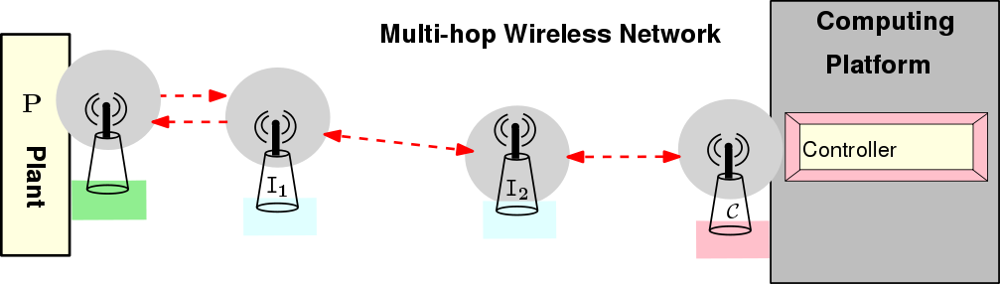

Foundation of Cyber Physical Systems
Term Project
Project 5: Delay-Aware Real-Time Wireless Networked Control Systems
Description
Feedback control systems wherein the control loops are closed through a real-time wireless network are called Wireless Networked Control Systems (WNCSs). The defining feature of a WNCS is that information (reference input, plant output, control input, etc.) is exchanged using a multi-hop wireless network among control system components (sensors, controller, actuators, etc.). Conventional control theories with many ideal assumptions, such as synchronized control and nondelayed sensing and actuation, must be reevaluated before they can be applied to WNCSs. One important issue is the network-induced delay (sensor-to-controller delay and controller-to-actuator delay) that occurs while exchanging data among devices connected to the shared medium. This delay, either constant (up to jitter) or time varying, can contribute to varying sampling periods for any physical system and its control loop in a network. Hence, eventually, the performance of control systems designed without considering the delay can be degraded and the system can even be destabilized. The objective of this project is to design such a WNCS network considering the delay and then implement a control schema to handle the issue monitoring the performance of the control system.
Design and Implementation Steps
- Consider the following diagram and design a WNCS that consists of one plant, one controller and two intermediate nodes. This WNCS should monitor real time and sense the network-induced delay. The plant will be a Matlab-Simulink based model interfaced with Arduino MEGA, an open-source electronics platform based on easy-to-use hardware and software. Arduino UNO platform will be used as a heart of all other nodes in the network interfaced with RF module nRF24L01+.

- Develop the interface between Matlab-Simulink based plant and Arduino MEGA which should work in almost real-time.
- Integrate RF module and RTC Real Time Clock Memory Module with the Arduino which help in wireless transmission and monitoring real time in the network.
- Implement python based scripts which will generate codes for all the nodes and upload them automatically provided with the network topology and corresponding communication schedule.
- Evaluate the network-induced delay and varying sampling periods for the plant in the WNCS.
- Design a control schema and implement different controllers in the computing platform to cope up with this change in sampling periods for a single control loop.
Evaluation Guidelines:
- Implementation (60%): Design the WNCS with support for the points mentioned above.
Emphasis shall be given on designing the interface between Matlab-Simulink based plant and Arduino MEGA, network-induced delay measuring framework and the control schema to address the challenge.
- Project Report (20%): Design a detailed report documenting the various modules of the framework and experimental results.
- Project Presentation (20%): Design a detailed presentation describing your framework and experimental observations.
Reference Paper